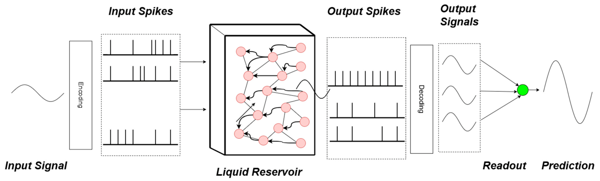
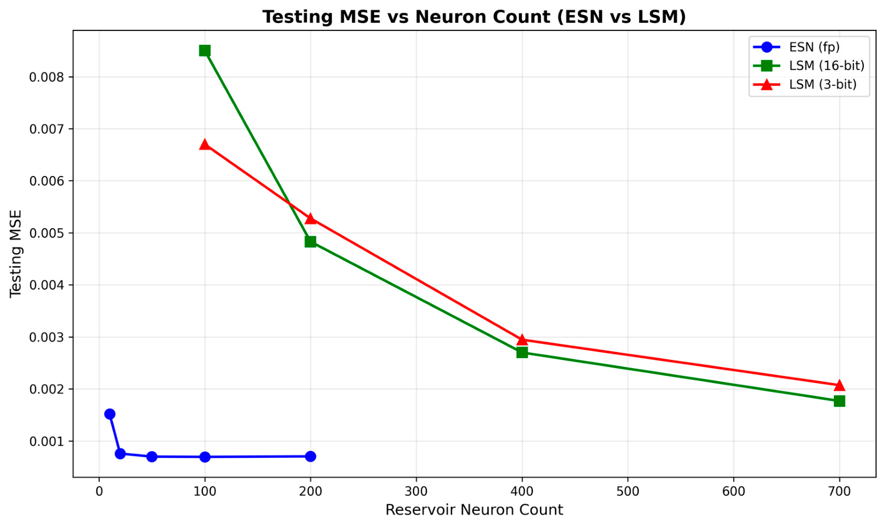
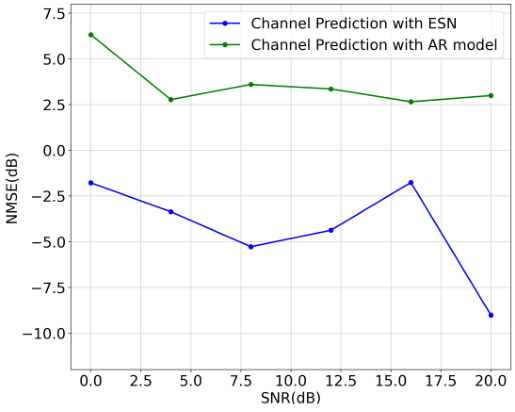

Surveys of reservoir computing and echo state networks
Reservoir computing trains only a linear readout on top of a fixed recurrent network, which makes it attractive for low-power hardware and for wireless signal processing. These two papers review echo state network (ESN) and liquid state machine (LSM) theory, benchmark both on chaotic time series including under reservoir quantization, and apply an ESN to MIMO-OFDM channel prediction.
Design
ESN formulation (both papers)
A fixed random reservoir of tanh units maps the input into a high-dimensional state, and only the output weights are trained, in closed form by ridge regression. The echo state property is kept by scaling the reservoir's spectral radius; reservoir size, sparsity and input scaling are the main hyperparameters.
LSM pipeline (AI 2026)
The input is encoded into spike trains (rate plus positive/negative threshold encoding) that drive a sparse reservoir of leaky integrate-and-fire neurons. Spikes are decoded by Gaussian smoothing into continuous states, and a linear readout is trained with Adam on the MSE loss.
Hardware-aware benchmark protocol (AI 2026)
ESNs (10-200 neurons) and LSMs (100-700 neurons) are compared on the same Mackey-Glass segment (5000/1000 train/test, one-step-ahead) with reservoir weights quantized to 2, 3, 6 and 16 bits. A NARMA-10 benchmark with 6- to 16-bit weights checks that the trends hold on a second task.
ESN benchmark and channel prediction (ICDMW 2025)
An ESN is swept from 10 to 200 reservoir neurons on Mackey-Glass. It is then applied to a 2x2 MIMO-OFDM vehicle-to-vehicle channel generated with NS-3 (3GPP SCM), using the channel at symbol i to predict symbol i+20, and compared with an order-20 autoregressive (AR) predictor.

Results
- AI 2026: ESN training error drops quickly with reservoir size, but test MSE stops improving beyond about 50-100 neurons and degrades earlier at 2-bit precision, a sign of overfitting.
- AI 2026: LSM training and test MSE keep decreasing from 100 to 700 neurons at every bit width, and the 3-bit LSM closely tracks the 16-bit one; the ESN still reaches lower absolute test MSE.
- AI 2026: at N = 200 the best ridge coefficient is beta = 1e-5 (test MSE 0.000143 at full precision, 0.000154 at 2-bit); tuning beta does not remove the ESN saturation trend.
- AI 2026: NARMA-10 results follow the same ESN-versus-LSM trends as Mackey-Glass.
- ICDMW 2025: in channel prediction, a 20-neuron ESN gives lower NMSE than the order-20 AR predictor at every tested SNR from 0 to 20 dB.

